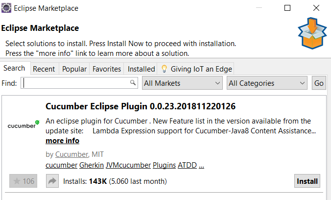
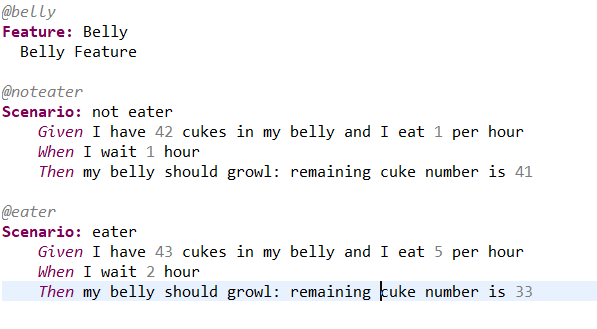
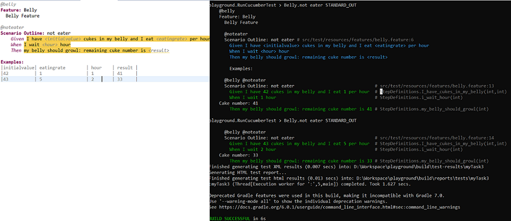

BDD
BDD is a testing approach, in which scenarios are defined in an easily understandable format.We will implement some cases in BDD format using Cucumber framework for Java.
Apart from Java code, high level scenario descriptions (written in Gherkin syntax) are kept in feature files.
To easily manage feature files, first install Cucumber plugin for Eclipse:

We will execute these scenarios over both Junit & TestNG. These are the dependencies we need:
We are ready. Lets define our scenarios: Create the feature files. (They can be placed under test/resources):

As, it can be seen on the image; it is pretty English statements and nothing more. But how can the runner maps these steps to methods?
The key is the step definitions. Create a step definitons java file and define all methods corresponding to scenario stages: Given, When & Then.
And remember: Our motivation is to test our functions. belly.eat is under test in the above case:
We have feature files and step definitons. (And of course mainly the class under test)
Then the runners are left: First, lets create a runner which fires tests over JUnit:
And, lets create a runner which fires tests over TestNG:
Final Step! Start these two runners. As you noticed, we have some tags. Related cases will be executed! Create gradle tasks for these two runners and start them:
gradle myTask2 myTask3 --rerun-tasks --info

Data Driven Testing
In belly feature file, we have defined exactly same scenario with different data. Then why dont we apply Data Driven Testing:
